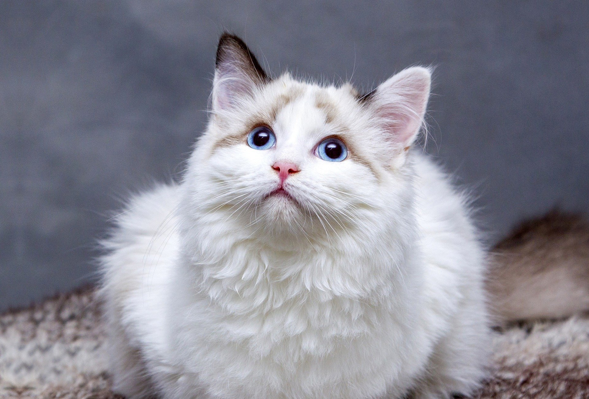

Existen muchas razas de gatos, cada una con sus propias características y personalidades. Aquí te presentamos algunas de las más populares:
Siamés: Conocidos por su inteligencia y vocalización, los gatos siameses son muy sociales y necesitan atención constante.
Persa: Con su pelaje largo y lujoso, los gatos persas son conocidos por su naturaleza tranquila y amigable. Requieren un mantenimiento regular de su pelaje.

Maine Coon: Esta raza es una de las más grandes y es famosa por su personalidad amistosa. Son excelentes compañeros y son conocidos por ser buenos con los niños y otros animales.
Bengala: Con un pelaje que recuerda a un felino salvaje, los gatos bengalas son muy activos y juguetones. Les encanta explorar y jugar, por lo que necesitan mucho espacio y estímulos.